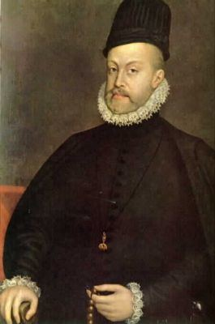

<div class="container d-flex justify-content-center w-100 pt-5">
    <div class="d-inline-flex flex-column text-white text-center">
        <h1>Blaise de Vigenère</h1>
        <div class="d-flex justify-content-center p-3 rounded"
            [ngStyle]="{'background-color':'#aa6649', 'border':'transparent'}">
            <div class="text-center p-1 rounded" [ngStyle]="{'background-color':'#FFFFFF', 'border':'transparent'}">
                
            </div>
            <p class="d-flex px-3" [ngStyle]="{'width':'40vw'}">
                Blaise de Vigenère (5 de abril de 1523 - 19 de febrero de 1596) fue un diplomático, criptógrafo y
                químico francés. El cifrado de Vigenère debe su nombre al cifrado que le fue falsamente atribuido (la
                paternidad volvió a Giovan Batista Belaso) en el siglo XIX.

                Vigenère nació en el pueblo de Saint-Pourçain (Francia). A la edad de 17 años comenzó su carrera
                diplomática, que duró más de treinta años, retirándose en 1570. A los 24 años de edad entró al servicio
                del Duque de Nevers. En 1549 visitó Roma en el curso de una misión diplomática de dos años, y regresó
                allí en 1566. Durante estas dos estancias, entró en contacto con libros que versaban sobre criptografía.
                Cuando Vigenère se retiró a los 47 años, ofreció su pensión anual de 1000 libras a los pobres de París.
                Estuvo casado con María Varé.

                En 1584 se hace secretario de la Cámara del rey Enrique III de Francia.

                En el curso de su jubilación, escribió más de veinte libros, entre los que figuran:

                Traicte de Cometes
                Traicte des Chiffres (1585).
                En su Traicte de Chiffres describe el primer método de cifrado polialfabético. Es el primer cifrado de
                este género difícil de romperse.

                Vigenère murió de un cáncer de garganta en 1596. Fue inhumado en la iglesia de Saint-Étienne-du-Mont de
                París.
            </p>
        </div>
        <div class="my-3">
            <button type="button" class="btn btn-secondary text-center" [routerLink]="['/aboutMe']"> Regresar</button>
        </div>
    </div>
</div>